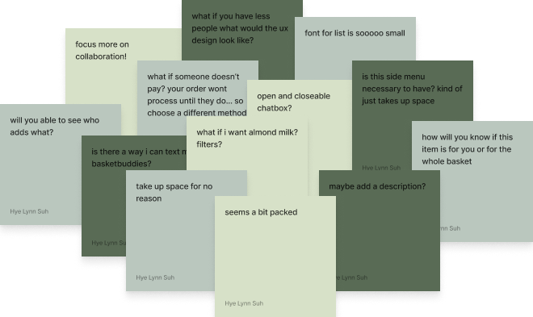
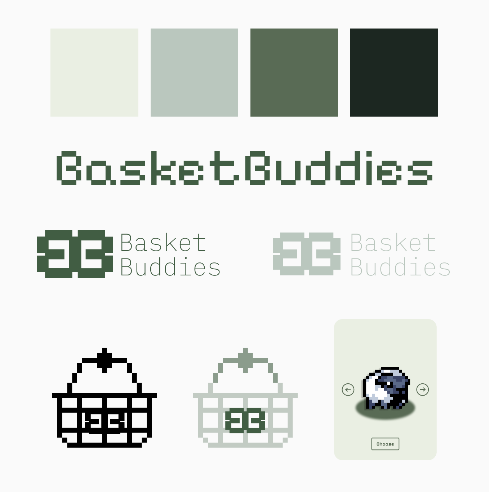

the problem:
why doesn't collaborative grocery shopping work online?
so... i came up with a research plan:
understanding user needs
Because I wanted to understand more about the issues of collaborative grocery shopping, I planned a round of 4 user interviews to learn why most users prefer to go grocery shopping alone and in person.
here's what i found...
sketching
I wanted to understand how others might approach these problems from an unbiased point of view so I brought these insights into a brainstorming session with 2 other people.

prototyping & user testing
Using Figma, I created mid-fidelity prototypes of the new features and conducted usability tests with three users who matched my target audience.

branding
Then I developed a new brand that emphasizes my service’s values: promoting collaboration and an easier grocery shopping experience tailored towards a younger audience

final design solutions
I crafted high-fidelity prototypes that aligned with Depop's brand message of “making fashion more circular.” Key features included:
edge case
In case the user skips the onboarding quiz, they can edit their preferences manually on the home page to customize the outfits the generator creates. These filters will automatically apply to the user's search feed as well, reducing any repetitive actions.
learnings
If I could do this project again, I would create more initial low-fi sketches exploring different features, play with some loading bar animations like Depop does on the current app, and lastly, interview sellers on Depop to understand the differences in the user journeys.
next steps
For my next steps, I would like to explore my other insight which was user-seller trust, add more edge cases to my other features, and explore the generator concept further to have accurate and inclusive representation of all body types.